CO — Colombia
The main impact of oil at $200 a barrel on Colombia would be a large drop in GDP of 1.50% by Q13. Equities peak at -2.70% in Q9.
Demand and trade. Consumption peaks at -0.85 % vs baseline in Q14, from -0.25 in Q1 to -0.65 in Q20. Investment peaks at -5.44 % vs baseline in Q7, from -1.84 in Q1 to -1.10 in Q20. Net Exports peaks at +3.57 % vs baseline in Q4, from +2.20 in Q1 to +1.43 in Q20. Gov Spending peaks at +1.05 % vs baseline in Q5, from +0.62 in Q1 to +0.57 in Q20. Gov Debt peaks at -2.22 % vs baseline in Q20, from -0.05 in Q1 to -2.22 in Q20.
External / FX. The real exchange rate shows real appreciation (a stronger home currency). Currency Strength peaks at -28.06 % vs baseline in Q4, from -16.56 in Q1 to -14.10 in Q20.
Labour. Employment peaks at -1.50 % vs baseline in Q18, from -0.07 in Q1 to -1.45 in Q20. Unemployment peaks at +0.14 pp in Q15, from +0.01 in Q1 to +0.11 in Q20. Real Wages peaks at -1.51 % vs baseline in Q20, from -0.01 in Q1 to -1.51 in Q20.
Prices. The three-year CPI impulse is +2.12 percentage points. CPI Inflation peaks at +0.42 pp in Q3, from +0.30 in Q1 to -0.18 in Q20. Domestic Infl. peaks at +0.29 pp in Q3, from +0.21 in Q1 to -0.13 in Q20. Marginal Cost peaks at -0.88 % vs baseline in Q13, from -0.24 in Q1 to -0.57 in Q20.
Financial conditions. Policy Rate peaks at +1.79 pp (annualized) in Q5, from +0.49 in Q1 to -0.97 in Q20. Govt 2Y Yield peaks at +1.47 pp (annualized) in Q2, from +1.40 in Q1 to -0.90 in Q20. Govt 5Y Yield peaks at -0.75 pp (annualized) in Q15, from +0.42 in Q1 to -0.64 in Q20. Govt 10Y Yield peaks at -0.49 pp (annualized) in Q14, from -0.09 in Q1 to -0.40 in Q20. Bond Price peaks at -6.40 % vs baseline in Q5, from -1.76 in Q1 to +3.48 in Q20. Equity Index peaks at -2.70 % vs baseline in Q9, from -0.96 in Q1 to -0.69 in Q20. Tobin's Q peaks at -3.81 % vs baseline in Q7, from -1.29 in Q1 to -0.77 in Q20. House Prices peaks at -2.02 % vs baseline in Q19, from -0.07 in Q1 to -2.00 in Q20. Bank Credit peaks at -0.20 % vs baseline in Q19, from -0.01 in Q1 to -0.20 in Q20. Credit Spread peaks at +0.01 pp in Q19, from +0.00 in Q1 to +0.01 in Q20.
Sectoral and capital. Manuf. GDP peaks at +6.32 % vs baseline in Q4, from +3.71 in Q1 to +3.18 in Q20. Services GDP peaks at -0.91 % vs baseline in Q13, from -0.26 in Q1 to -0.59 in Q20. Capital Stock peaks at -0.38 % vs baseline in Q20, from -0.01 in Q1 to -0.38 in Q20.
Timing. By Q20 GDP is still -0.98% from baseline.
These figures are model IRFs versus baseline, not forecasts.
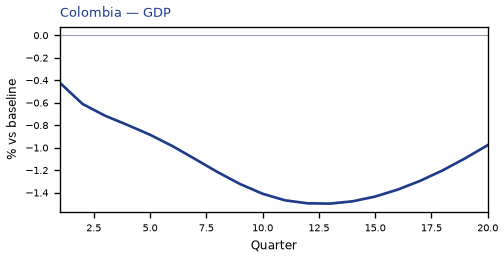
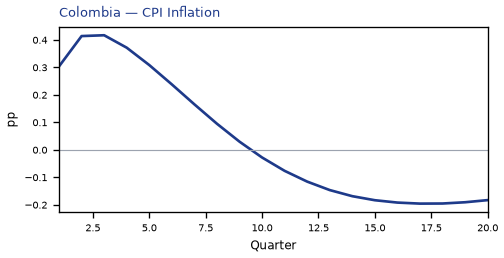
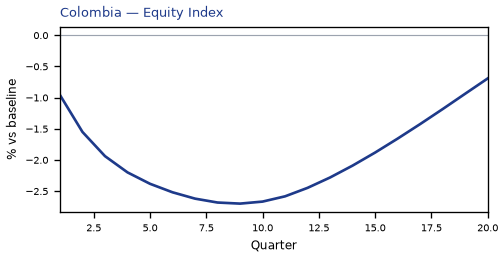
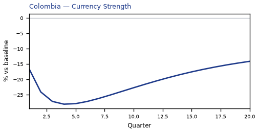
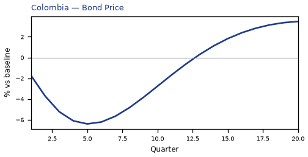
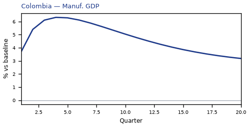
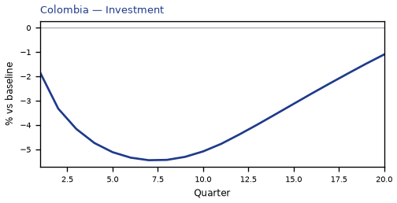
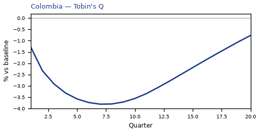
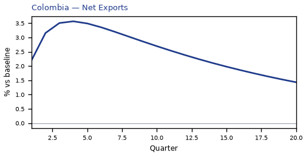
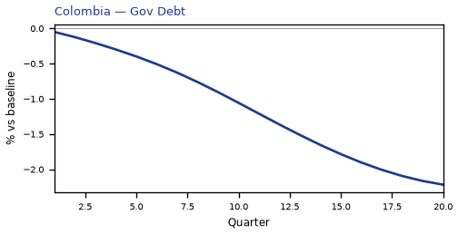
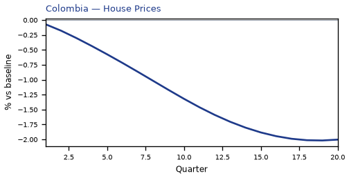

source=live · global_macro_v5 · contract v6 · Q1–Q20 JSON · not financial advice